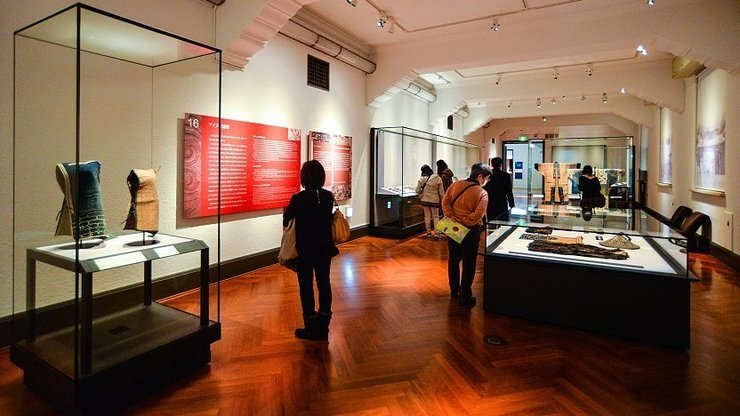

National Museum
東京国立博物館

The Tokyo National Museum (東京国立博物館, Tōkyō Kokuritsu Hakubutsukan) is the oldest and largest of Japan's top-level national museums, which also include the Kyoto National Museum, the Nara National Museum and the Kyushu National Museum. It was originally established in 1872 at Yushima Seido Shrine and moved to its current location in Ueno Park a few years later.
The Tokyo National Museum features one of the largest and best collections of art and archeological artifacts in Japan, made up of over 100,000 individual items including nearly a hundred national treasures. At any one time, about 4000 different items from the permanent museum collection are on display. In addition, visiting temporary exhibitions are also held regularly. Good English information and audio guides are available.
The large museum complex is home to six separate buildings, each large enough to be considered a museum on its own, which specialize in different types of art and exhibitions. The main Honkan building was opened in 1938 and exhibits a variety of Japanese artwork from ancient times to the 19th century including antique Buddhist statues, painted sliding doors, scrolls, ceramics and maps in addition to cultural items such as masks, costume, armor and weapons among other historical artifacts.
To the left of the Honkan stands the Hyokeikan, the oldest building on the grounds, which was built in 1909 in celebration of the Taisho Emperor's wedding. The Hyokeikan is a representative example of Western-style architecture during the Meiji Period and is registered as an important cultural property. The building is primarily used for temporary exhibitions and has undergone several renovations over the years to maintain the structure.
To the right of the Honkan stands the Toyokan building, designed in 1968 by Japanese architect Taniguchi Yoshiro. The building features galleries displaying Asian art and artifacts from China, Korea, Southeast Asia, Central Asia, India and Egypt. Behind the Honkan stands the Heiseikan, a fairly recent addition to the museum built to commemorate the then Crown Prince's wedding in 1993. It houses exhibitions on ancient Japanese cultures as well as large scale special exhibitions.
The museum's newest building, the Horyuji Homotsukan or the Gallery of Horyuji Treasures, was built to house a collection of religious objects consisting mostly of small, intricate statues and copper relief images donated by Horyuji Temple in Nara. The building was designed by Taniguchi Yoshio (son of Toyokan architect Taniguchi Yoshiro) whose minimalist style can also be seen in his other projects including the Heisei Chishinkan at the Kyoto National Museum, the Sea Life Aquarium at Tokyo's Kasai Rinkai Park and the Mimoca Art Museum in Marugame, as well as the Museum of Modern Art in New York.
Finally, just outside the museum grounds proper stands the Kuroda Memorial Hall, which was built from donations by Kuroda Seiki, a Japanese artist who is known as the father of modern Western-style painting in Japan. The hall houses a rotating collection of Kuroda's paintings and sketches as well as other artwork that has been donated by his family. In addition to the exhibition halls, the Tokyo National Museum also offers a Japanese-style garden and teahouses (open to the public in spring and autumn) located behind the Honkan, as well as multiple shops and cafes spread out around the grounds.